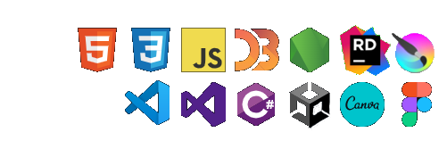

lasco

mark daniel lasco

Hi there! I'm a passionate software developer specializing in crafting intricate,
dynamic, and engaging solutions to complex challenges. Beyond coding, I'm an artist at heart, creating
everything from videos and photos to captivating graphics. Welcome to my portfolio, thank you for
stopping by!
Languages and tools I use:
